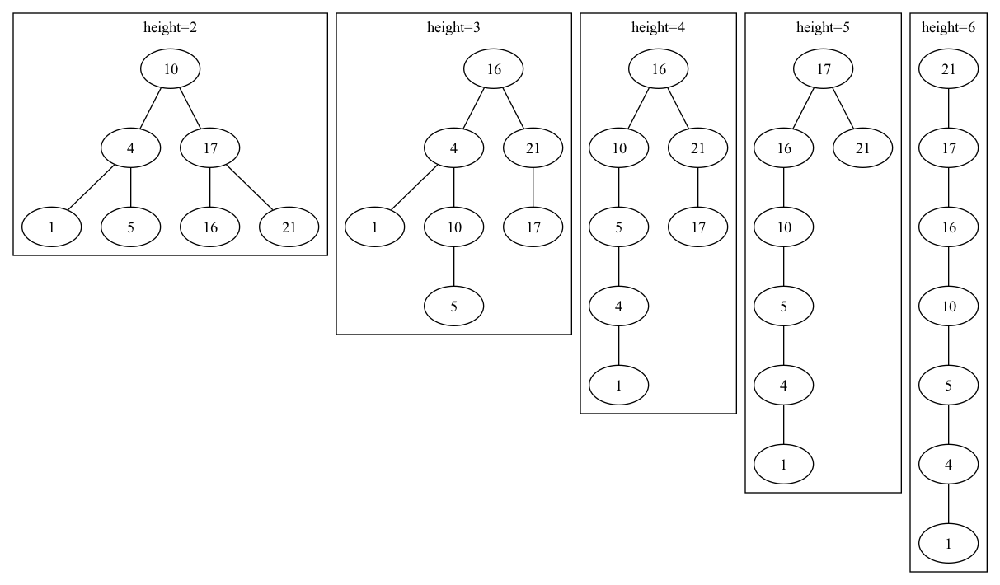

Chapter 12.1
ch12.1
12.1-1

12.1-2
If \(x\) is a node of a min-heap, then we have \(x.key \leq x.left.key\) and \(x.key \leq x.right.key\). If \(x\) is a node of a binary search tree, then we have \(x.left.key \leq x.key \leq x.right.key\). Since we cannot determine the sorted order of the left child and the right child of a node via the min-heap, we cannot print out the keys of an \(n\)-node min-heap in sorted order in \(O(n)\) time.
12.1-3
INORDER-TREE-WALK-ITER(x)
let S be a new stack
PUSH(S, x)
while not EMPTY?(S)
cur = POP(S)
while cur != NIL
PUSH(S, cur)
cur = cur.left
if not EMPTY?(S)
prev = POP(S)
print prev.key
PUSH(S, prev.right)
INORDER-TREE-WALK-ITER-NO-STACK(x)
cur = x
left_done = FALSE
while cur != NIL
if left_done == FALSE
while cur.left != NIL
cur = cur.left
left_done = TRUE
print cur.key
if cur.right != NIL
cur = cur.right
left_done = FALSE
else while cur.p != NIL and cur == cur.p.right
cur = cur.p
cur = cur.p
12.1-4
PREORDER-TREE-WALK(x)
while x != NIL
print x.key
PREORDER-TREE-WALK(x.left)
PREORDER-TREE-WALK(x.right)
POSTORDER-TREE-WALK(x)
while x != NIL
POSTORDER-TREE-WALK(x.left)
POSTORDER-TREE-WALK(x.right)
print x.key
12.1-5
Since we could get the ordered list from the binary search tree in \(O(n)\) running time, the comparison-based algorithm for constructing a binary search tree from an arbitrary list of \(n\) elements should take \(T(n)\) time in the worst case that
\begin{align*} &T(n) + O(n) \geq \Omega(n\lg n)\\ \implies &T(n) = \Omega(n\lg n) \end{align*}